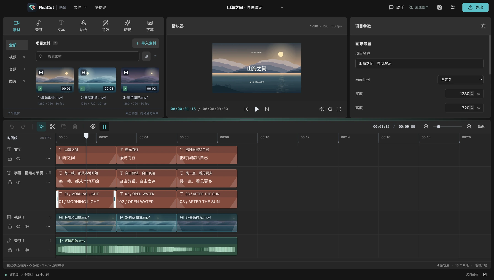

Multitrack editing
Trim and split clips, mark in and out points, and keep multiple timelines in one project with a shared media library.
Open-source desktop video editor
Cut footage, style subtitles and mix sound in one workspace. From import to export, the core editing tools run on your Mac.
v0.8.0 Preview Apple Silicon

Trim and split clips, mark in and out points, and keep multiple timelines in one project with a shared media library.
Import SRT, edit captions in batches and animate text. Set up MLX Whisper to transcribe on your Mac.
Animate position, scale and opacity with editable curves. Use speed ramps, reverse playback and freeze frames.
Normalize clip loudness, duck music under speech and cut to detected beats.
Save an edit as a template with named media and text slots. Swap in new material and save each cut as its own project.
Use proxy previews for high-resolution footage. Export the timeline or a selected range to MP4 or MOV.
Optional Codex plugin
Open the local editor inside Codex. Work on the timeline directly or ask Codex to fill template slots and export multiple videos.

The preview installer is for Apple Silicon Macs with M-series chips. Open the DMG and drag ReaCut into Applications. This preview is ad-hoc signed and has yet to be notarized by Apple. Installation guide
Yes. Import, editing, project storage and export run locally without an account. Automatic transcription needs an initial local setup with MLX Whisper and a model. Local speech guide
ReaCut can import basic edits from supported local Jianying drafts. Import coverage is experimental, and some text styles, effects and keyframes may be lost. Supported formats